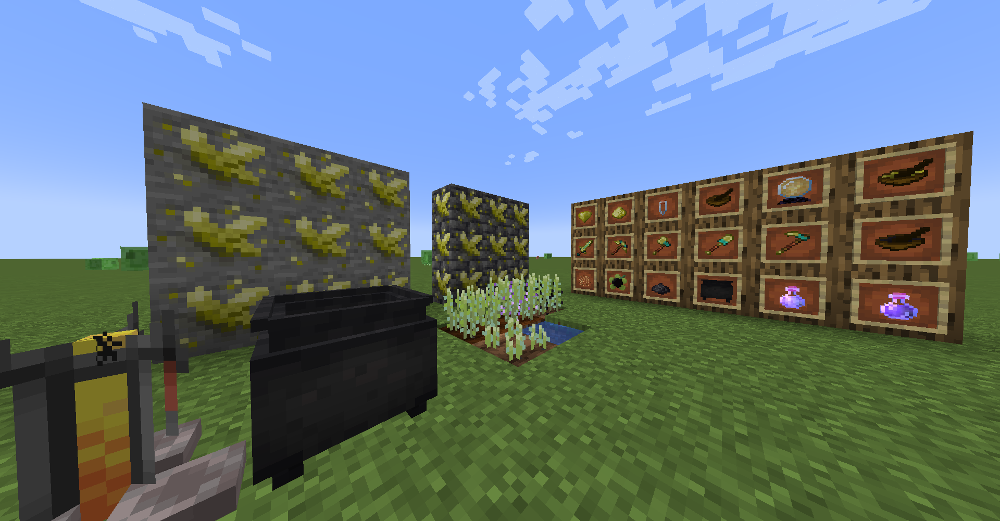

Smallsh
As a part of my Operating Systems class I built a functioning shell called smallsh. It can be executed from within an existing bash terminal. It can parse input from the user, execute built in bash commands via forking and executing processes, can run commands in the background and clean up finished proceses, it can also expand the $$ into the process ID of the shell.
Friendventure Web
As a part of my Web Development class my team and I built a little visual novel adventure game called Friendventure. Only having a couple of weeks to put this together and create all the art was stressful, but also tons of fun. Because of the time constraint and limitations of html, we had to scale down and bring back the scope of the project so that we could get everything done on time. It was good for getting experience with java script and showing what we have learned during the class with html and css. It was also out first times working on a project as a team which had its own complications. Learning skills such as how to assign tasks and a timeline throughout the development process were a valuable for my software engineering class in the future.
Minecraft Spotions Mod
On my free time since winter break of 2022, I have been learning Java and studying how Minecraft works to develope mt mod, Spotions. The theme of the mod is potion brewing and alchemy. It is very much in early development, but I have been able to create my own ores and generate them in the world. I have also made my own custom models and textures for new items. A sneak peek at what I have been working on is down below.
